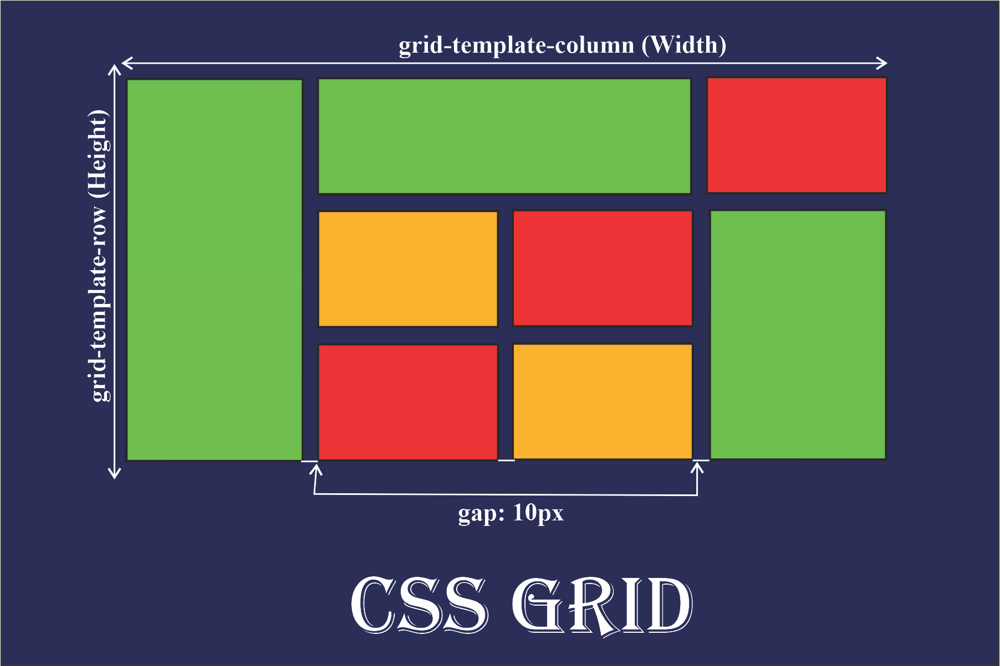
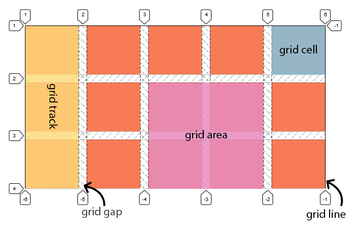
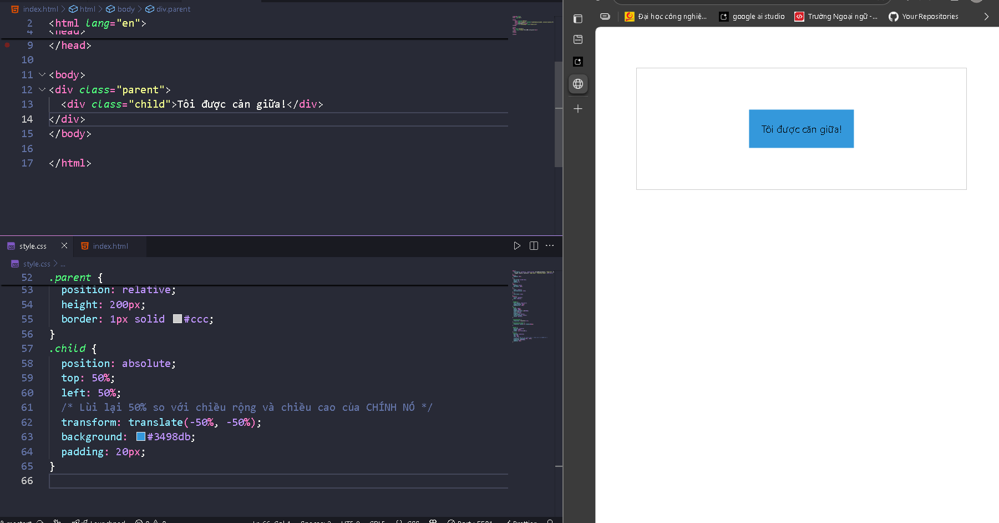
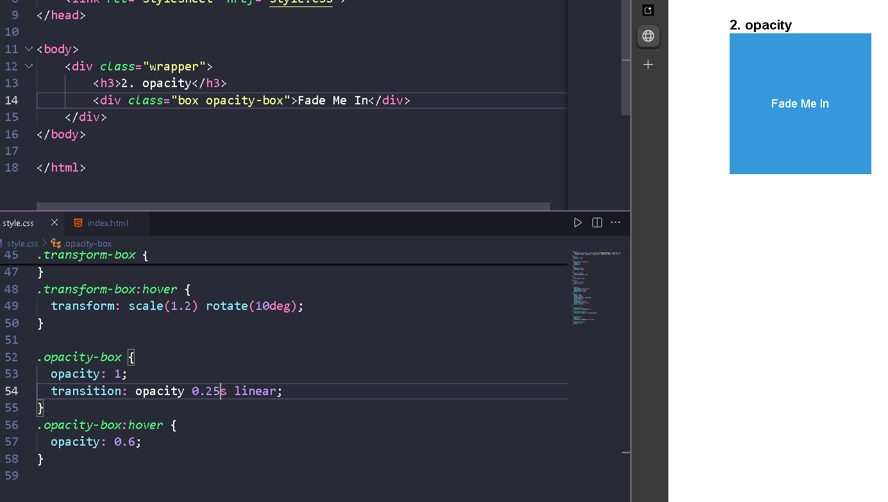

Nội dung

CSS Grid: Hệ thống bố cục mạnh mẽ và chi tiết
CSS Grid là một hệ thống layout được thiết kế để giúp bạn xây dựng bố cục web một cách chính xác, dễ dàng và nhanh chóng. Grid cho phép bạn định nghĩa không gian theo cả hàng (row) và cột (column), giúp kiểm soát toàn diện layout của trang web.
I. Tổng quan về CSS Grid

CSS Grid bao gồm các khái niệm cơ bản sau:
- Grid Container:
- Là phần tử cha được thiết lập thuộc tính
display: grid - Chịu trách nhiệm định nghĩa bố cục, số hàng, số cột, và vị trí của các phần tử con.
- Grid Item:
- Là các phần tử con trực tiếp bên trong Grid Container.
- Chúng có thể được đặt vào bất kỳ vị trí nào trong grid và tùy chỉnh kích thước, khoảng cách một cách linh hoạt.
- Grid Row và Grid Column:
- Grid Row: Hàng ngang trong grid, được tạo ra bởi
grid-template-rows. - Grid Column: Cột dọc trong grid, được tạo ra bởi
grid-template-columns.
- Grid Line:
- Là các đường dọc hoặc ngang, chia Grid Container thành các phần nhỏ.
- Các Grid Line được đánh số bắt đầu từ 1 và kéo dài qua toàn bộ Grid Container.
- Grid Track:
- Là khoảng không gian giữa hai Grid Line, bao gồm các hàng hoặc cột.
- Grid Cell:
- Là một ô duy nhất, nơi một Grid Item có thể được đặt.
- Grid Area:
- Là vùng bao gồm một hoặc nhiều Grid Cell, có thể đặt tên hoặc xác định bằng các dòng.
- Grid Gap:
- Là khoảng cách giữa các hàng và cột, được thiết lập thông qua
grid-gap.
II. Cách sử dụng CSS Grid
1. Khai báo một Grid Container
Để biến một phần tử thành Grid Container, sử dụng thuộc tính display: grid:
.container {
display: grid;
}
2. Định nghĩa số hàng và cột
grid-template-columns: Định nghĩa số lượng và kích thước của các cột.grid-template-rows: Định nghĩa số lượng và kích thước của các hàng.
Ví dụ:
.container {
display: grid;
grid-template-columns: 100px 200px 100px; /* Ba cột với kích thước khác nhau */
grid-template-rows: 150px 150px; /* Hai hàng, mỗi hàng cao 150px */
}
- Sử dụng đơn vị
fr:
Đơn vị fr chia sẻ không gian còn lại trong grid container.
.container {
display: grid;
grid-template-columns: 1fr 2fr 1fr; /* Tỷ lệ các cột: 1-2-1 */
}
- Sử dụng hàm
repeat():
Rút gọn cú pháp khi có các cột hoặc hàng lặp lại.
.container {
display: grid;
grid-template-columns: repeat(3, 1fr); /* Ba cột, mỗi cột có kích thước 1fr */
}
3. Khoảng cách giữa các hàng và cột
grid-gap: Khoảng cách giữa các hàng và cột.
.container {
display: grid;
grid-gap: 20px; /* Khoảng cách 20px giữa các hàng và cột */
}
grid-row-gapvàgrid-column-gap: Định nghĩa khoảng cách riêng biệt cho hàng và cột.
.container {
display: grid;
grid-row-gap: 10px; /* Khoảng cách giữa các hàng */
grid-column-gap: 15px; /* Khoảng cách giữa các cột */
}
4. Định vị trí Grid Item
grid-column: Xác định vị trí bắt đầu và kết thúc của Grid Item theo cột.
.item {
grid-column: 1 / 3; /* Bắt đầu từ cột 1 và kết thúc trước cột 3 */
}
grid-row: Xác định vị trí bắt đầu và kết thúc của Grid Item theo hàng.
.item {
grid-row: 2 / 4; /* Bắt đầu từ hàng 2 và kết thúc trước hàng 4 */
}
grid-area: Định nghĩa vùng bao phủ của Grid Item.
.item {
grid-area: 1 / 1 / 3 / 4; /* Từ hàng 1, cột 1 đến trước hàng 3, cột 4 */
}
span: Kéo dài Grid Item qua nhiều hàng hoặc cột.
.item {
grid-column: span 2; /* Kéo dài qua 2 cột */
grid-row: span 3; /* Kéo dài qua 3 hàng */
}
5. Đặt tên và định nghĩa Grid Area
Sử dụng grid-template-areas để đặt tên cho các vùng trong Grid:
.container {
display: grid;
grid-template-areas:
"header header header"
"main main sidebar"
"footer footer footer";
}
.header {
grid-area: header;
}
.main {
grid-area: main;
}
.sidebar {
grid-area: sidebar;
}
.footer {
grid-area: footer;
}
!!! ::: Ngoài ra, còn có sử dụng align-items, justify-items, align-content, justify-content, align-self, justify-self để căn chỉnh vị trí của các ô trong grid.
III. CSS Position
CSS Position là thuộc tính dùng để định vị và kiểm soát cách các phần tử xuất hiện trên trang web. Nó cho phép các phần tử di chuyển linh hoạt hoặc cố định trong giao diện tùy theo nhu cầu thiết kế.
Dưới đây là các giá trị phổ biến của thuộc tính position:
1. static (Mặc định)
- Đây là giá trị mặc định của tất cả các phần tử HTML.
- Phần tử được sắp xếp theo thứ tự xuất hiện trong tài liệu và không bị ảnh hưởng bởi các thuộc tính định vị như
top,left,right,bottom.
Ví dụ:
<div class="static-box">Box</div>
.static-box {
position: static;
background-color: lightblue;
}
- Kết quả: Phần tử được sắp xếp theo vị trí tự nhiên mà không có sự thay đổi.
2. relative
- Phần tử được định vị so với vị trí ban đầu của chính nó.
- Khi sử dụng các thuộc tính
top,left,right,bottom, phần tử sẽ di chuyển khỏi vị trí ban đầu mà không làm ảnh hưởng đến các phần tử khác trong bố cục.
Ví dụ:
<div class="relative-box">Box</div>
.relative-box {
position: relative;
top: 20px; /* Di chuyển xuống 20px */
left: 30px; /* Di chuyển sang phải 30px */
background-color: lightgreen;
}
- Kết quả: Phần tử di chuyển xuống dưới và sang phải nhưng không chiếm vị trí mới trong luồng tài liệu.
3. absolute
- Phần tử được định vị so với phần tử cha gần nhất có
positionkhácstatic. - Nếu không có phần tử cha nào có
position, nó sẽ căn cứ vào toàn bộ trang (html). - Phần tử không giữ vị trí trong luồng tài liệu và sẽ không ảnh hưởng đến các phần tử khác.
Ví dụ:
<div class="relative-container">
<div class="absolute-box">Box</div>
</div>
.relative-container {
position: relative;
width: 300px;
height: 200px;
background-color: lightgray;
}
.absolute-box {
position: absolute;
top: 10px;
left: 20px;
background-color: lightpink;
padding: 10px;
}
- Kết quả: Phần tử
.absolute-boxđược định vị dựa trên container.relative-container. Nó không chiếm chỗ trong luồng tài liệu.
4. fixed
- Phần tử được định vị so với cửa sổ trình duyệt (viewport).
- Vị trí của phần tử sẽ không thay đổi ngay cả khi trang được cuộn.
Ví dụ:
<div class="fixed-box">Fixed Box</div>
.fixed-box {
position: fixed;
top: 10px;
right: 10px;
background-color: yellow;
padding: 10px;
}
- Kết quả: Phần tử cố định ở góc trên bên phải trình duyệt và không di chuyển khi cuộn trang.
5. sticky
- Phần tử hoạt động như
relativecho đến khi cuộn đến một điểm nhất định, sau đó trở thànhfixed. - Phạm vi dính của phần tử chỉ nằm trong container của nó.
Ví dụ:
<div class="sticky-container">
<div class="sticky-box">Sticky Box</div>
</div>
.sticky-container {
height: 200vh; /* Tăng chiều cao để cuộn */
}
.sticky-box {
position: sticky;
top: 20px; /* Cố định cách mép trên 20px */
background-color: orange;
padding: 10px;
}
- Kết quả: Phần tử dính ở vị trí cách mép trên 20px khi cuộn trang nhưng sẽ dừng lại khi container kết thúc.
5. Ví dụ: Kết hợp relative và absolute
Trường hợp thực tế: Một phần tử con có position: absolute nằm trong một phần tử cha có position: relative. Điều này cho phép phần tử con được định vị tự do nhưng vẫn trong phạm vi của phần tử cha.
<div class="relative-container">
<div class="absolute-child">Absolute Child</div>
</div>
.relative-container {
position: relative;
width: 400px;
height: 300px;
background-color: lightblue;
}
.absolute-child {
position: absolute;
top: 50px;
left: 100px;
background-color: lightcoral;
padding: 10px;
}
- Kết quả: Phần tử
.absolute-childchỉ được di chuyển trong phạm vi của.relative-container.
6. Tổng kết
| Giá trị | Ý nghĩa | Giữ vị trí trong luồng tài liệu | Định vị dựa trên |
|---|---|---|---|
static | Vị trí mặc định, không thể điều chỉnh. | Có | Luồng tự nhiên. |
relative | Di chuyển so với vị trí ban đầu của chính nó. | Có | Chính nó. |
absolute | Di chuyển tự do trong phạm vi phần tử cha gần nhất có position. | Không | Phần tử cha gần nhất có position. |
fixed | Cố định trong cửa sổ trình duyệt, không thay đổi khi cuộn trang. | Không | Cửa sổ trình duyệt. |
sticky | Dính tại một vị trí khi cuộn trang, chỉ trong phạm vi container của nó. | Có | Container hoặc viewport (khi cuộn). |
VI. CSS Animation
CSS Animation giúp bạn tạo ra các hiệu ứng chuyển động mượt mà giữa các trạng thái của phần tử trong trang web. Hoạt ảnh trong CSS được áp dụng qua hai phần chính: khai báo @keyframes và sử dụng thuộc tính animation.
1. Khai báo @keyframes
Để tạo ra một hoạt ảnh, bạn cần khai báo @keyframes, đây là nơi định nghĩa các trạng thái khác nhau của phần tử tại các thời điểm cụ thể trong quá trình chuyển động.
fromvàto: Được sử dụng để định nghĩa trạng thái ban đầu và trạng thái kết thúc của hoạt ảnh.- Phần trăm (%): Bạn cũng có thể sử dụng giá trị phần trăm (0%, 50%, 100%) để xác định các điểm thời gian trong quá trình hoạt ảnh.
Ví dụ về @keyframes:
@keyframes moveRight {
from {
transform: translateX(0); /* Bắt đầu tại vị trí gốc */
}
to {
transform: translateX(200px); /* Di chuyển sang phải 200px */
}
}
Ví dụ về sử dụng phần trăm để chia nhỏ quá trình:
@keyframes bounce {
0%,
100% {
transform: translateY(0); /* Ở vị trí gốc */
}
50% {
transform: translateY(-50px); /* Nâng lên 50px tại giữa quá trình */
}
}
2. Các thuộc tính trong animation
Sau khi khai báo @keyframes, bạn cần sử dụng thuộc tính animation để áp dụng hoạt ảnh lên phần tử.
a. animation-name
- Chức năng: Đặt tên cho hoạt ảnh đã khai báo với
@keyframes. - Giá trị: Tên của
@keyframes.
Ví dụ:
animation-name: bounce; /* Áp dụng hoạt ảnh 'bounce' đã khai báo */
b. animation-duration
- Chức năng: Xác định thời gian mà hoạt ảnh sẽ diễn ra.
- Giá trị: Một khoảng thời gian (ví dụ:
2s,500ms).
Ví dụ:
animation-duration: 2s; /* Hoạt ảnh diễn ra trong 2 giây */
c. animation-timing-function
- Chức năng: Xác định cách thức thay đổi tốc độ trong suốt quá trình hoạt ảnh. Điều này giúp tạo ra các hiệu ứng chuyển động mượt mà hoặc có sự thay đổi tốc độ.
- Giá trị: Các giá trị như
linear,ease,ease-in,ease-out,ease-in-out.
Ví dụ:
animation-timing-function: ease-in-out; /* Tốc độ thay đổi mượt mà */
d. animation-delay
- Chức năng: Xác định thời gian trì hoãn trước khi hoạt ảnh bắt đầu.
- Giá trị: Một khoảng thời gian (ví dụ:
1s,500ms).
Ví dụ:
animation-delay: 1s; /* Hoạt ảnh bắt đầu sau 1 giây */
e. animation-iteration-count
- Chức năng: Xác định số lần hoạt ảnh sẽ lặp lại.
- Giá trị: Một số lượng cụ thể (ví dụ:
3) hoặcinfinite.
Ví dụ:
animation-iteration-count: infinite; /* Hoạt ảnh sẽ lặp lại vô hạn */
f. animation-direction
- Chức năng: Xác định hướng của hoạt ảnh.
- Giá trị:
normal(hoạt ảnh chạy theo chiều mặc định),reverse(hoạt ảnh chạy ngược lại),alternate(hoạt ảnh chạy theo chiều thuận và ngược lại),alternate-reverse.
Ví dụ:
animation-direction: alternate; /* Hoạt ảnh chạy theo chiều thuận rồi ngược lại */
3. Cú pháp shorthand của animation
Sau khi hiểu các thuộc tính cơ bản, bạn có thể sử dụng cú pháp shorthand để áp dụng tất cả các thuộc tính này trong một dòng mã duy nhất.
Cú pháp shorthand:
animation: [animation-name] [animation-duration] [animation-timing-function]
[animation-delay] [animation-iteration-count] [animation-direction];
Ví dụ:
/* Ứng dụng toàn bộ thuộc tính animation vào phần tử */
.animation-box {
animation: bounce 2s ease-in-out 1s infinite alternate;
}
4. Ví dụ cụ thể
HTML:
<div class="box"></div>
CSS:
@keyframes moveRight {
from {
transform: translateX(0);
}
to {
transform: translateX(200px);
}
}
.box {
width: 100px;
height: 100px;
background-color: lightblue;
animation: moveRight 2s ease-in-out infinite;
}
Giải thích:
@keyframes moveRight: Khai báo hoạt ảnh di chuyển sang phải.animation: moveRight 2s ease-in-out infinite: Áp dụng hoạt ảnh với thời gian 2 giây, chuyển động mượt mà, lặp vô hạn.
VII. CSS Transition
CSS Transition giúp tạo ra các hiệu ứng chuyển đổi mượt mà giữa hai trạng thái của phần tử. Các thuộc tính của Transition giúp bạn tạo hiệu ứng mượt mà khi người dùng thay đổi trạng thái của phần tử (ví dụ: hover, focus, active).
1. Các thuộc tính trong transition
a. transition-property
- Chức năng: Xác định thuộc tính CSS mà bạn muốn tạo hiệu ứng chuyển đổi.
- Giá trị: Tên thuộc tính (ví dụ:
background-color,width,transform).
Ví dụ:
transition-property: background-color; /* Tạo hiệu ứng chuyển đổi cho background-color */
b. transition-duration
- Chức năng: Xác định thời gian mà hiệu ứng chuyển đổi sẽ hoàn thành.
- Giá trị: Một khoảng thời gian (ví dụ:
0.5s,300ms).
Ví dụ:
transition-duration: 0.3s; /* Chuyển đổi trong 0.3 giây */
c. transition-timing-function
- Chức năng: Xác định cách thức thay đổi tốc độ trong suốt quá trình chuyển đổi.
- Giá trị: Các giá trị như
ease,linear,ease-in,ease-out,ease-in-out.
Ví dụ:
transition-timing-function: ease-in-out; /* Chuyển đổi mượt mà */
d. transition-delay
- Chức năng: Xác định thời gian trì hoãn trước khi hiệu ứng chuyển đổi bắt đầu.
- Giá trị: Thời gian trì hoãn (ví dụ:
0.5s,1s).
Ví dụ:
transition-delay: 0.2s; /* Chuyển đổi bắt đầu sau 0.2 giây */
2. Cú pháp shorthand của transition
Sau khi hiểu các thuộc tính cơ bản của transition, bạn có thể sử dụng cú pháp shorthand để áp dụng tất cả các thuộc tính này trong một dòng mã duy nhất.
Cú pháp shorthand:
transition: [transition-property] [transition-duration]
[transition-timing-function] [transition-delay];
Ví dụ:
/* Ứng dụng toàn bộ thuộc tính transition vào phần tử */
.transition-box {
transition: background-color 0.3s ease-in-out 0.2s;
}
3. Ví dụ cụ thể
HTML:
<div class="transition-box">Hover Me</div>
CSS:
.transition-box {
width: 200px;
height: 200px;
background-color: lightblue;
transition: background-color 0.5s ease;
}
.transition-box:hover {
background-color: lightgreen;
}
Giải thích:
transition: background-color 0.5s ease: Tạo hiệu ứng chuyển đổi màu nền trong 0.5 giây.- Khi di chuột qua phần tử
.transition-box, màu nền sẽ thay đổi từlightbluesanglightgreenmột cách mượt mà.
4. Một số thuộc tính CSS thường đi kèm cùng transition
4.1 Transform (tác động đến thẻ)
- translate() : Di chuyển một thẻ
- Hàm này di chuyển một phần tử từ vị trí hiện tại - của nó dọc theo trục X (ngang) và Y (dọc).
- translateX(giá_trị): Di chuyển theo chiều ngang.
- translateY(giá_trị): Di chuyển theo chiều dọc.
- translate(giá_trị_x, giá_trị_y): Viết tắt cho cả hai.
<div class="parent">
<div class="child">I'm centered!</div>
</div>
.parent {
position: relative;
height: 200px;
border: 1px solid #ccc;
}
.child {
position: absolute;
top: 50%;
left: 50%;
/* Lùi lại 50% so với chiều rộng và chiều cao của CHÍNH NÓ */
transform: translate(-50%, -50%);
background: #3498db;
padding: 20px;
}

- scale() — Co giãn (Phóng to/Thu nhỏ) một thẻ
- Hàm này làm cho một phần tử lớn hơn hoặc nhỏ hơn.
- scaleX(giá_trị): Chỉ co giãn chiều rộng.
- scaleY(giá_trị): Chỉ co giãn chiều cao.
- scale(giá_trị): Co giãn đều cả chiều rộng và chiều cao.
- scale(giá_trị_x, giá_trị_y): Co giãn chiều rộng và cao một cách độc lập.
<button class="scale-button">Phóng to!</button>
.scale-button {
transition: transform 0.2s ease-out;
}
.scale-button:hover {
transform: scale(1.1); /* Lớn hơn 10% */
}
4.2 Color, Opacity,... (bề ngoài của thẻ)
- Color, background-color, border-color, border-radius,..
- Opacity: giá trị từ 0 -> 1
- 0 là tàng hình
- 1 là nguyên hình
- Một số thuộc tính khác như box-shadow, filter mọi người có thể tìm hiểu nếu muốn biết thêm nha

Tổng kết so sánh giữa CSS Transition và CSS Animation
| Đặc điểm | CSS Transition | CSS Animation |
|---|---|---|
| Kích hoạt | Khi trạng thái của phần tử thay đổi (chẳng hạn như khi hover). | Tự động chạy hoặc có thể kích hoạt bằng cách thay đổi lớp hoặc sự kiện. |
| Độ phức tạp | Hiệu ứng đơn giản, chuyển đổi giữa hai trạng thái. | Có thể tạo ra các hiệu ứng phức tạp, với nhiều bước chuyển động. |
| Lặp lại | Không lặp lại trừ khi trạng thái thay đổi liên tục. | Có thể lặp lại vô hạn, hoặc lặp lại một số lần nhất định. |
| Thời gian bắt đầu | Chỉ có thể bắt đầu khi có thay đổi trạng thái. | Có thể bắt đầu ngay lập tức hoặc sau một khoảng thời gian trì hoãn (delay). |
| Sử dụng | Thích hợp cho các hiệu ứng chuyển đổi đơn giản như hover, focus. | Thích hợp cho các hoạt ảnh phức tạp, nhiều bước thay đổi như di chuyển, thay đổi màu sắc liên tục. |
| Điều khiển tốc độ | Dễ dàng điều khiển với các thuộc tính như transition-timing-function. | Cung cấp nhiều tùy chọn kiểm soát chuyển động như keyframes, animation-timing-function. |
| Sự kiện | Không thể tự kích hoạt hay có nhiều trạng thái. | Có thể tạo nhiều trạng thái và chuyển động, chẳng hạn như di chuyển, thay đổi màu sắc, xoay vòng. |
| Khả năng tái sử dụng | Ít linh hoạt hơn khi muốn thay đổi nhiều trạng thái. | Rất linh hoạt trong việc thay đổi nhiều trạng thái và tạo hiệu ứng phức tạp. |